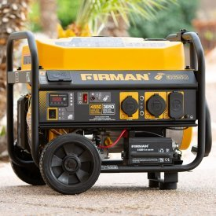
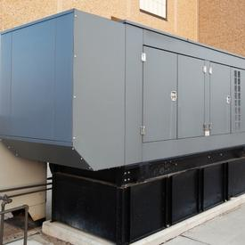
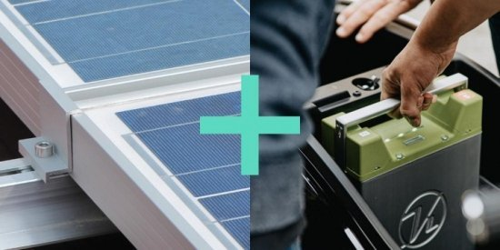

Génératrice OU Panneaux solaires avec batterie - Quelle est la meilleure option pour mon entreprise?
17 décembre 2021
Si votre entreprise est située dans une zone où les pannes de courant sont fréquentes, vous connaissez probablement déjà très bien les solutions d'alimentation de secours telles que les génératrices conventionnelles, mais de nouvelles solutions telles que les panneaux solaires avec batteries peuvent être une alternative beaucoup plus propre et encore moins coûteuse dans certains cas.
S'assurer que les systèmes critiques restent opérationnels pendant une panne peut être extrêmement important pour certaines entreprises et même se traduire par d’énormes économies d'argent - pensez à une entreprise de transformation alimentaire ou pharmaceutique qui doit maintenir son inventaire dans un environnement frais ou même une usine de fabrication opérant 24h sur 24h qui ne peut tout simplement pas arrêter sa production sans encourir des coûts extrêmement élevés.
Mais d'autres types d'organisations peuvent vouloir garder certains de leurs systèmes opérationnels pour minimiser l'impact sur la logistique. Par exemple, une université pourrait exiger que son accès Internet et son Wi-Fi restent opérationnels en plus d'une partie de son éclairage. Cela permettrait aux enseignants et aux étudiants de rester sur le campus et d'éviter un cauchemar de logistique.
Mais bien sûr, la solution parfaite pour votre entreprise est celle qui vous fournira suffisamment de puissance pour couvrir vos « charges critiques » (ce que vous devez alimenter en cas de panne) aussi longtemps que vous le souhaitez et dans les limites de votre budget .
Ainsi, avant d'évaluer une solution, toutes les entreprises doivent réaliser une étude de faisabilité avec un expert (par exemple, le rapport de prescription vadiMAP) pour s'assurer qu'elles comprennent parfaitement leurs besoins énergétiques.
------------------
Lorsqu'elles envisagent de remplacer ou d'acheter une solution d’alimentation de secours, les entreprises examinent généralement les caractéristiques suivantes :
- Coût d'achat - coût initial pour acheter l'équipement
- Coût d'exploitation - par exemple, le gaz nécessaire pour alimenter la génératrice
- Coût de maintenance - coût pour garder l'équipement sécurisé et fonctionnel
- Autonomie - combien de temps peut-il fonctionner en cas de panne de courant ?
- Durée de vie/durabilité – quand faut-il le remplacer ?
- Temps de réponse - à quelle vitesse peut-il être activé ?
Mais le monde d'aujourd'hui nous oblige à considérer ces solutions sous un angle supplémentaire. Rares sont ceux qui prennent vraiment le temps de réfléchir aux caractéristiques suivantes :
- Émissions de gaz à effet de serre - Les émissions de CO2 des génératrices au gaz peuvent être très élevées
- Pollution sonore - les génératrices alimentées au carburant sont bruyants et doivent être installées à l'extérieur la plupart du temps
À bien des égards, les génératrices sont efficaces et certainement la solution d’alimentation de secours la plus largement utilisée aujourd'hui. Cependant, beaucoup opteront pour une génératrice sans évaluer d'autres options.
Examinons les deux options, les génératrices et les panneaux solaires avec batteries, pour vous aider à comprendre les avantages et les inconvénients et à décider lequel convient le mieux à votre organisation.
Génératrices conventionnelles
Les génératrices conventionnelles (ou traditionnelles) peuvent être autonomes ou portables et fonctionner avec une variété de carburants tels que l'essence, le diesel, le biodiesel, le propane ou le gaz naturel.
Génératrices portables

Les génératrices portables conviennent généralement à votre maison ou peuvent convenir aux très petites entreprises ou aux petits bureaux. Ils nécessitent généralement une intervention manuelle et peuvent sembler intimidantes pour les utilisateurs novices.
Avantages
Moins chères et peuvent être facilement déplacées (portable).
Inconvénients
Limitées en puissance, très bruyantes, produisent beaucoup de fumée, nécessitent un entretien régulier et un démarrage manuel. Les génératrices portables peuvent également causer des problèmes techniques s'ils ne sont pas déconnectées à temps lorsque le courant est rétabli.
Les génératrices au gaz naturel sont plus propres et moins bruyantes, mais nécessitent un raccordement spécial à un réservoir de propane ou de gaz naturel.
Génératrices autonomes

Les génératrices de secours autonomes sont équipées d'un commutateur de transfert manuel ou automatique. En d'autres termes, ils peuvent soit démarrer automatiquement en cas de coupure de courant, soit nécessiter une intervention manuelle.
Ces génératrices sont généralement plus adaptées aux grandes entreprises et la solution sélectionnée par défaut pour de nombreuses organisations.
Avantages
Capacité de puissance plus élevée, longue autonomie (si l’alimentation en carburant est suffisante) et durée de vie plus longue.
Inconvénients
Émissions de CO2 élevées (pour certains carburants), bruyantes, coûts d'installation élevés, nécessitent un permis (dans de nombreuses villes), coûts de maintenance élevés, délai de réponse (même avec commutateur de transfert automatique) et doivent être ravitaillées en carburant pour continuer à fonctionner. La réserve de carburant n'est pas non plus à négliger et peut entraîner des surcoûts et même certains risques.
Panneaux solaires avec batteries

Les innovations récentes dans les batteries lithium-ion en ont fait un choix parfait pour de nombreuses entreprises à la recherche d'une nouvelle solution d’alimentation de secours plus responsable et durable. Les entreprises ont désormais accès à des batteries de plus grande capacité à moindre coût ainsi qu'à des solutions innovantes leur permettant de connecter facilement les batteries aux panneaux solaires, en plus d'être automatiquement allumées et éteintes et nécessiter peu ou pas d'entretien.
Connectées à des panneaux solaires, les batteries lithium-ion sont le moyen le plus responsable, durable et parfois même le plus sécuritaire d'alimenter les charges critiques lors d'une panne.
Les coûts initiaux sont généralement plus élevés, mais ils nécessitent peu ou pas d'entretien et aucun carburant. Les coûts d'exploitation et de maintenance sont donc presque nuls.
Avantages
Les panneaux solaires avec batteries sont fiables, ils fournissent une alimentation ininterrompue (commutation beaucoup plus rapide que les génératrices), ont un impact environnemental minimal, fournissent une quantité infinie d'énergie "gratuite" (stockage de l'excès d'énergie solaire pendant la journée pour une utilisation après le coucher du soleil), nécessitent très peu d’entretien, ils sont extrêmement silencieux et aucun besoin de se soucier de la réserve en carburant. De plus, les batteries peuvent offrir des avantages économiques lorsqu'elles sont associées à un système intelligent de gestion de l'énergie.
Inconvénients
Les panneaux solaires avec batteries détiennent généralement moins d'énergie que les génératrices (limité par le budget, non pas par la capacité technologique), les jours nuageux peuvent réduire la production d'énergie solaire et le coût d'achat est plus élevé.
Quelle solution est la meilleure pour votre entreprise ?
Tel que mentionné précédemment, la solution parfaite pour votre entreprise est celle qui vous fournira suffisamment de puissance pour supporter vos « charges critiques », aussi longtemps que vous en aurez besoin et dans les limites de votre budget.
Donc, avant d'évaluer les options, assurez-vous de bien comprendre votre profil énergétique et ce dont vous aurez besoin d’alimenter en cas de panne.
Les génératrices traditionnelles peuvent être la meilleure option pour certaines entreprises, mais les panneaux solaires avec batteries sont le bon choix pour les organisations à la recherche d'une solution fiable, propre et sans souci pour l'avenir!
Contactez-nous pour savoir comment nous pouvons vous aider avec une étude de faisabilité simple et rapide